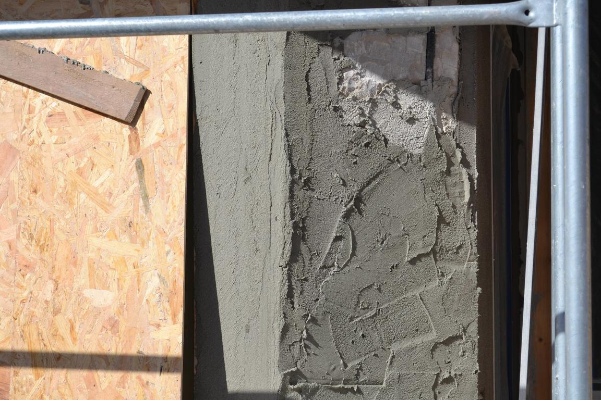
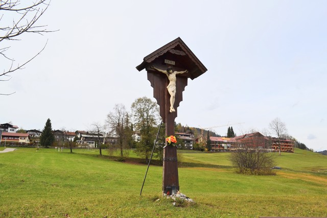
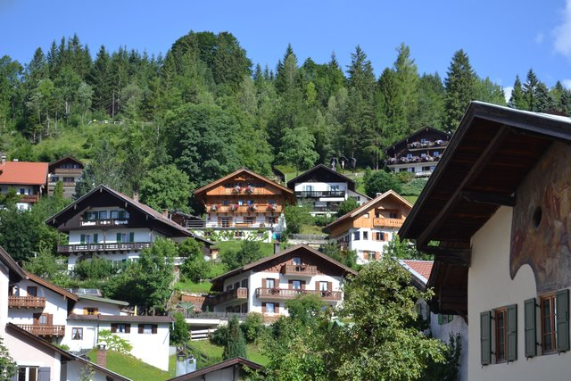
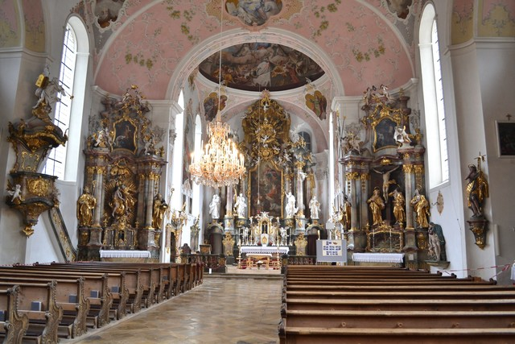

ふと乗った2両編成のローカル線の終点、Ruhpolding村。 とくに何かある場所ではないのだが、静かに秋が降りてくる牧草地を眺めこんこんと透き通るような川の流れを見て、 蔦の色付くパン屋の軒先で地元のドイツ人たちに混じってとてもとてもゆっくり紅茶を飲みながら過ごす日曜日の朝はなんと素晴らしいことでしょう。
4度めのオーバーストドルフ。
真冬のミッテンヴァルト。 「豪雪の翌日に晴れ上がって大きく張り出した家々の屋根にどっさり雪が積もっている様子」か 「雪の舞う夜に家々の明かりが灯っている様子」をいつか見に行きたいのだが条件がなかなか揃わない。
オーバーアマガウの村は美しいフレスコ画が描かれた家々で有名だが、 なかでも村外れのエッタール通りには童話の世界が描かれている一角がある。 ここはもう絵本の世界だ。
「ヘンゼルとグレーテル」。壁一面に童話の一部始終が非常に緻密に描かれている。 個人宅だが、家それ自体が素晴らしい芸術作品になっている。 ミッテンヴァルトの家々もそうだが、 この地方の人たちが《家》に見出す美的感覚には並々ならぬものがある。 ぼくにとっては美術館を巡っているよりおもしろい。 これからも何度も訪れることだろう。
「七匹の子ヤギ」。フレスコ画の背景に尖っている山が描かれているが、 これはオーバーアマガウの村の横に聳えている山。 こういうさりげなさが素晴らしい。
「赤ずきんちゃん」。
1953年に描かれたものらしい。フレスコ画は時間とともに風合いを増していく。
「ブレーメンの音楽隊」。
ケンプテンとガルミッシュを結ぶ「絶景路線」の途中に位置する街、ネッセルヴァング。 小さな街でとくに何があるというわけではないが、 アルゴイの牧歌的な情景に癒やされるにはこういう街がいい。
街の中心部に建つ教会のロココ装飾が素晴らしかった。 観光地でもないふとした小さな街で思いもしない素晴らしい教会に出会えるのが南ドイツ散歩の醍醐味。
4度めのミッテンヴァルト。 今回はミッテンヴァルトの物語性たっぷりの建築様式を観察するために訪れた。
木窓と鎧戸。 「なぜ日本の窓はドイツの窓と比べて残念に見えるのか？」をしばらく考えたのだが、 ひとつの大きな理由が立体感だと思う。 YKKなどの日本の標準的な窓は半外付けになっており、外壁に対して外側に飛び出す構造になっている。 だからかっこ悪いし、ここに飾りの鎧戸を付けたところで （鎧戸が機能するはずがないのが明らかなので）ちぐはぐな見た目になる。 これに対してドイツの窓は外壁に埋め込まれており（インセット）、 さらに外壁の外側に鎧戸が付くことで窓に美しい立体感が生じるのだ。
日本でこの窓構造を実現するのは2つの理由で難しい。 第一の理由は壁が薄いこと。 ドイツの壁は（断熱性を確保するために）厚く、外側からも内側からも窓をインセットするだけの厚みがあるが、日本の薄い壁だとこれができない。 第二の理由は網戸の存在。 冷静に考えるとわかるが、鎧戸と網戸は両立しえない。 というのは、鎧戸が機能するためには窓は内開きにならないといけないが、 窓が内開きになると網戸が付けられなくなる。 網戸を優先する日本では窓は外開きになるので鎧戸が設置できないのだ。
ところで、網戸がなくて困らないのかとドイツの人に聞いてみた。 日本人ほどには「家の内部」に対する考え方が繊細ではないようだが （たとえばドイツ人は家の中でも靴で過ごす）、やはり虫が入ってくるのは気になるらしい。 ドイツでは窓辺にゼラニウムの花が飾られることが多いが、 これは（ある種類の）ゼラニウムに蚊が嫌う成分が含まれているため。

壁塗りの工事をやっている家があったので見学することにした。 驚いたのはその塗り方の大胆さである。 コテに思いきり漆喰をすくい上げ、それをベタベタと壁に打ち付けていく。 付きそこなった漆喰がぼたぼたと地面に落ちるし、塗面もものすごく粗いが気にしない。 その粗さが塗り壁に自然な模様を作り上げていく。 これに対して日本のカルクウォールの場合には、 「自然な模様に見えるように人為的にコテで跡をつけていく」ように塗られるため、 できた模様は確かに繊細で美しくはあるが動きや面白みに欠けてしまう。 似たようなことはドイツパンにも言える。 東京の有名なパン屋さんで買えるドイツパンやカンパーニュは確かにおいしいし美しいのだが、 何かが欠けている。 美しく完成されすぎているのだ。

半年ぶりに訪れたオーバーストドルフは凍てつくような寒さで雪が舞っていた。
オーストリアのページで書いたクラインヴァルザータールの入口になるドイツ側の街がオーバーストドルフ。 アルゴイ地方の小さな街だ。 バイエルン・アルプスの山岳ハイキングの起点にもなっていて、駅には登山客の姿がたくさんあった。
街から2kmほど離れた丘を上って、街の全景を眺める。 アルゴイ地方ののどかな風景が素晴らしい。
この地方は信仰心が深い。各所にキリストの木像が立てられている。

街の中心にある教会。

2回めのミッテンヴァルト。真夏の晴れた日に訪れた。 2年前にミッテンヴァルトを訪れてから、何度となくこの街のことが気になっていた。 あのときは曇りでぱっとしなかったのだが、この街には秘められた何かがある気がしてならなかったのだ。
訪れてみて、その「何か」が何なのかわかった。「家の絵本性」だ。 ミッテンヴァルトの街並みは、ゲーテの言葉を借りれば「生きた絵本の世界」で、 それはひとつひとつの家の絵本性から成り立っている。

将来、こういう家で暮らしてみたい。注文住宅で戸建を建てるときはこんな家を建ててみたい。 そんなわけで、この「家の絵本性」が建築的にどういう要素から実現されているのか、調べることにした。 ミュンヘンオフィスの同僚の知り合いにオーストリア出身の建築家の方がいて、いろんなことを教えてもらった。 この家は Bavarian Country-side House と呼ばれていること。 窓の横のヴォレーは、昔まだガラスが脆かった時代に嵐に備えて付けられたが、いまでは装飾になっていること。 フラワーボックスに咲いている花は Geranien Balkon という名前の花だということ （日本でいうゼラニウムの一種で、のちにミュンヘンの露店で種を手に入れることができた）。 窓やヴォレーについては、だいぶ細かいことを調べた。
Bavarian Country-side House やアルゴイ地方の家々を観察するうちにこういうことにも気づいた。 南ドイツでは、住環境を考えるときの思考が「全体から細部へ」向かうのだ。 家を作るとき、まず全体の形をどうするかが決まって、それから内部の居住スペースの間取りがデザインされる。 だから家全体のシルエットが美しくなる。 日本だと逆だ。 まず、内部の居住スペースの間取りをデザインして、家全体の形がそれによって規定されることになる。 なので、よほど計算された大手ハウスメーカーの家でもないかぎり、 日本の家は居住スペースをつなぎあわせたようなでこぼこの形をしている。
同じことは街並みにも言えるだろう。 ドイツでは、街の中心としての教会の存在や市壁・城壁の存在によって、まず「街」の全体が規定され、 その中に居住スペースが作られていく。 一方、日本では、みんなが居住スペースを好き勝手に作って街を広げていった結果、それが「街」として定義される。 日本では、住環境の思考が「細部から全体へ」向かうのに対して、ドイツでは「全体から細部へ」向かうのだ。
これ以上書くと旅行記の範疇を越えるのでやめるが、とにかく、ミッテンヴァルトの「家の絵本性」には大いに惹かれるものがある。
街の中心部にある聖パウロ教会も素晴らしい。実に「絵本的な」教会だ。

天井画が見事。
ミッテンヴァルトの街から、50分ほどハイキングで山登りすると、ラウター湖という湖にたどり着く。
ラウター湖を訪れたもうひとつの理由はこの礼拝堂だ。 最初にミッテンヴァルトを訪れたとき、聖パウロ教会の入口にあったパンフレットでこの礼拝堂の写真を見て、 なんて美しい佇まいなんだろうと思った。 それからしばらく場所がわからずにいたのだが、 あるとき何かを検索していて、ラウター湖のほとりにある礼拝堂だと知ったのだ。 それで今回訪れた。
南バイエルンは、信仰心が深い地方で、キリスト教が生活の隅々にまで溶け込んでいる。 日本でいうところのお地蔵さんや祠のような感じで、十字架や礼拝堂が立っていたり、 ホテルやレストランの壁の一角に、キリストの木の像がさりげなく飾ってあったりする。
10年に一度、村人総出で行うキリスト受難劇で有名な村。 この村には、美しいフレスコ画が描かれた家々が並んでいる。
「ヘンゼルとグレーテル」や「赤ずきんちゃん」などの童話が描かれた家もあるのだが、 この日は風邪っぽくて、見つけられずに帰ってきてしまったのが残念。
村の中心にある教会。 この教会はメルヘンだ。 教会に入った途端、白とピンクを基調にしたロココ装飾の優美で可愛らしい空間に包まれる。 円形の造りの祭壇上部には花形のスタッコ装飾が散りばめられており、優しさがいっそう際立っている。

バイエルン・アルプスの麓に広がる、ドイツ・アルペン街道の街。 観光ガイドにも載っていない小さな街なのだが、 ヴァイオリンの生産が有名で、オーケストラでヴァイオリンをやってる方とお話してたら、 ミッテンヴァルトのことをご存じだった。 「耳をすませば」のワンシーンで、「地球屋」のおじいさんがヴァイオリンを制作しているときに開いている本にも 「ミッテンワルト」の文字が見える。
ミッテンヴァルトは、家々に描かれたフレスコ画がとても可愛らしい。 ゲーテがこの街を「生きた絵本」と称したらしいが、まさに絵本の中の世界だ。
丘の上から眺めるミッテンヴァルトの街並み。アルプスの山間に広がる街だ。